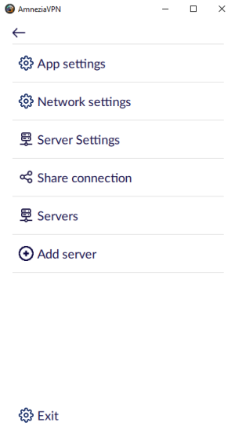
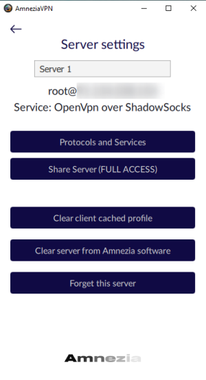
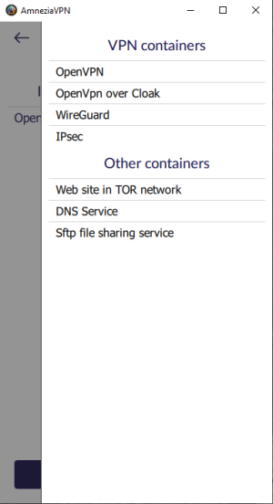
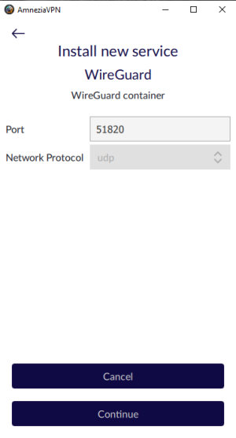
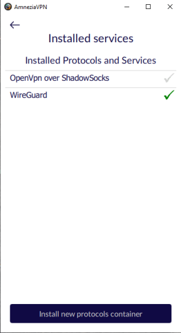
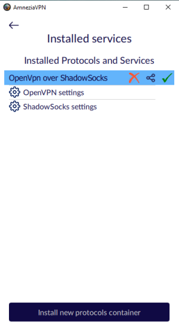
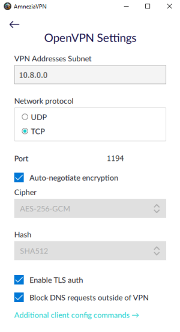
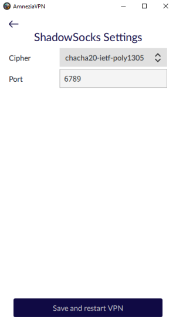

Переустановка или перенастройка контейнеров
Шаг 1. Определяемся с целью
Если вам нужна полная переустановка, то ваши шаги:
- Удаление AmneziaVPN с сервера
- Автоматическая или ручная установка с нуля
Если вы хотите:
- Изменить настройки уже установленных сервисов
- Установить какой-либо сервис
- Удалить какой-либо сервис
Шаг 2. Откройте настройки сервера



Шаг 3. Обзор установленных протоколов
Для этого среди настроек сервера нажмите на "Протоколы и сервисы" (protocols and services) и увидите список установленных контейнеров.
Зеленая галочка в списке обозначает действующий протокол для VPN соединения, серой галочкой будут отмечены все остальные (при наличии таковых).
Следующий шаг вновь зависит от вашей цели:
- Для установки новых сервисов переходите к шагу 4
- Для удаления уже существующих сервисов переходите к шагу 5
- Для изменения конфигурации установленных сервисов переходите к шагу 6 и последующим

Шаг 4. Установка нового сервиса
Нажмите кнопку "Установка контейнера с новым протоколом" (Install new protocols container). Вам отобразится список доступных к установке сервисов за исключением тех, которые уже установлены.
Выбираете любой. Для примера мы выберем контейнер с WireGuard. Перед нами появится возможность предварительно настроить порт и выбрать сетевой протокол (TCP/UDP), если устанавливаемый сервис поддерживает оба варианта. Так WireGuard работает только на UDP, поэтому мы можем только задать порт. Нажимаем "Продолжить" (Continue) и дожидаемся установки.
После установки нового сервиса Вы вернетесь к списку установленных контейнеров. Амнезия сама переключится на только что установленный сервис (зеленая галочка напротив WireGuard). Чтобы переключиться на любой другой установленный протокол - нажмите на серую галочку напротив него.



Шаг 5. Удаление существующего сервиса

Шаг 6. Настройка существующего сервиса
Нажмите на строку с любым установленным протоколом - для него отобразятся кнопки "удалить" (красный крестик), "поделиться" и "активировать". Так же, под строкой с протоколов отобразится список используемых в нем сервисов для настройки. Так, рассматриваемый в данном случае контейнер "OpenVPN over ShadowSocks" содержит в себе 2 сервиса - OpenVPN и ShadowSocks, для каждого из которых можно открыть настройки (OpenVPN settings, ShadowSocks settings)
Важный момент: название каждого контейнера отображает иерархию сервисов в нем: так, в случае "OpenVPN over ShadowSocks" Ваш траффик принимает ShadowSocks, перенаправляется в OpenVPN и уже дальше покидает ваш сервер.
В данном случае, у нас нет необходимости менять что-либо в конфиге OpenVPN (мы напрямую с ним не взаимодействуем). ShadowSocks "не балует" нас обилием настроек, но т.к. ShadowSocks является точкой приема нашего траффика - здесь мы можем изменить порт и алгоритм шифрования трафика. После внесения изменений нажмите "Сохранить и перезапустить VPN" (Save and restart VPN).
Важный момент: после сохранения настроек необходимо заново делиться конфигами для всех клиентов на других устройствах, иначе они не смогут подключиться.


